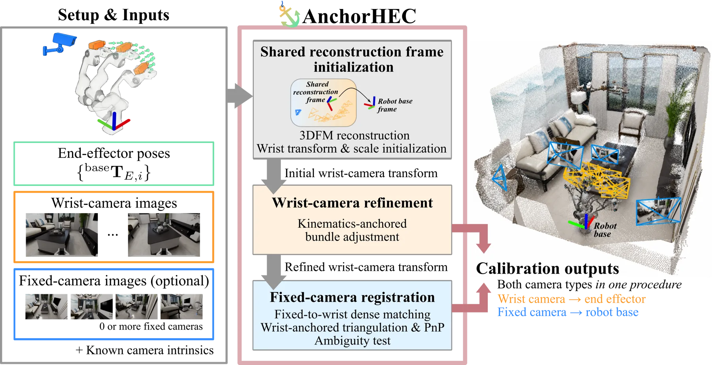
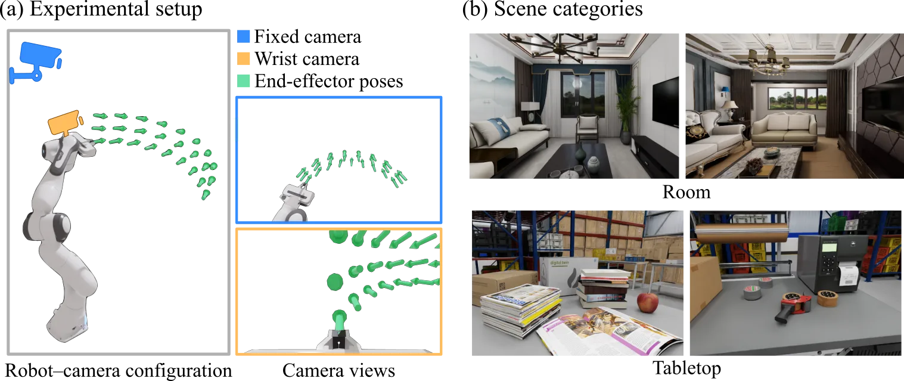
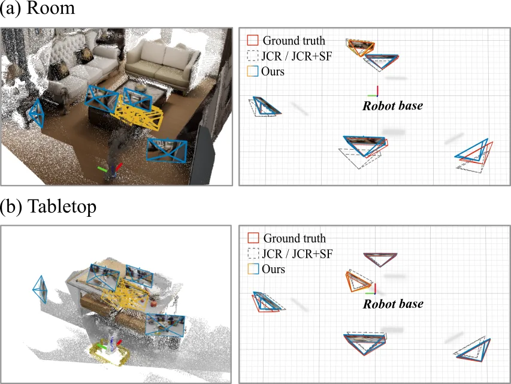
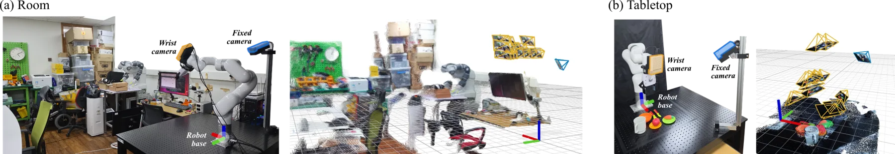

AnchorHEC：腕部与固定相机的一次性无靶标手眼标定
AnchorHEC: Targetless Hand-Eye Calibration of Wrist and Fixed Cameras
把机器人正运动学当作米制锚点，先用 3DFM 联合重建初始化腕部与固定相机位姿，再用 exact-FK bundle adjustment 精化腕部变换，最后把固定相机配准到由腕部位姿三角化出的米制点云。仿真 24 个条件下腕部平移/旋转平均比 JCR 低 84.6%/70.0%，实体 xArm6 上 Nw=15 时腕部 1.35 cm、固定相机 1.63 cm。
wrist translation error
fixed-camera translation error
mean reduction vs JCR
BA runtime
作者、单位与技术谱系 · Research context
作者与单位
研究脉络
- JCR：Unifying Representation and Calibration with 3D Foundation Models（Zhi et al., RA-L 2024）方法基座关系：AnchorHEC 的相对运动方程 A_ij X = X S_λ(B_ij)、闭式初始化与尺度处理直接沿用 JCR，并把 JCR 作为全文主对照。[论文 §II-A 与 Table II]
- Calib3R（Allegro et al., 2026, arXiv:2509.08813）同期上游工作关系：同样用 3D 基础模型做手眼标定与米制场景重建，但只处理腕部相机且无公开实现，本文把固定相机纳入同一次标定作为差异点。[论文 Table I 与 §III]
- Bi-JCR（Tang et al., ICRA 2026, arXiv:2505.24819）方法上游（JCR 谱系续作）关系：把 JCR 的联合标定扩展到双手/多腕部相机与场景表示，但仍不处理固定相机，本文延续同一谱系补上 eye-to-hand 一侧。[论文 Table I 与 §I]
- AnchorHEC（本篇推进）本篇推进关系：在 JCR 谱系上加入 FK 引导的视角对选择、exact-FK 两档 BA 与固定相机米制配准，把两类相机合并为一次流程。[论文 §I 贡献与 Table V]
合作网络
- KAIST → AnchorHEC 论文KAIST → AnchorHEC关系：同一单位共同署名[论文首页脚注]
- AnchorHEC → JCR 求解器AnchorHEC → JCR (Zhi et al., 2024)关系：明确技术依赖（初始化与基线）[论文 §II-A]
- AnchorHEC → RoMa v2AnchorHEC → RoMa v2 dense matching关系：明确技术依赖（固定相机对应）[论文 §II-C 与 §III-C]
作者与单位来自论文首页脚注；谱系与网络只记录论文明确引用的技术接续、同一单位署名与可复查的技术依赖，不推断导师或师生关系。
方法本质拆解 · What actually changed
是不是微调？
不是。全文没有任何网络训练或微调：3DFM（DUSt3R/MASt3R/VGGT/ViPE）以冻结权重提供重建，SIFT 与 RoMa v2 也是现成匹配器，改变量只有 X、λ、D_i、κ 与固定相机位姿。它属于纯测试时的几何估计算法，因此换主干不需要重训，但也继承了主干的重建偏差。
有没有额外约束？
有，而且是方法的核心。exact-FK 档把 D_i 硬设为 I，等于把机器人正运动学当作米制尺度与基座对齐的硬约束；放宽档改为对 D_i 与 κ 加高斯先验（FK 0.3°/3 mm，κ 三档 0.05/0.2/0.5）。此外隐含假设刚性安装、场景静止、腕部绕非平行轴旋转、内参已知；配准阶段还有深度为正、视角 ≥2°、重投影 ≤6 px 的几何过滤。
推理/后端到底做了什么？
推理就是一条确定的几何流水线：联合重建 → 闭式/鲁棒初始化（Park–Martin 旋转 + JCR 的平移尺度解 + L-BFGS/Huber）→ 腕部 SIFT 轨迹 BA（LM，最多十轮，逐轮剔观测并重三角化）→ 稠密匹配与三角化 → PnP RANSAC 加非线性精化 → 第二竞争位姿歧义检验 → 不接受则回退到尺度重拟合与轴向校正后的共享帧位姿。没有学习式后端，也没有全局因子图。
方法本质是什么？
本质是“用机器人运动学给单目重建定米制尺度和基座朝向，再把固定相机配准到这个已锚定的米制点云上”。它改变的是重建系与机器人系之间的 7 自由度（尺度加刚体）不确定性，靠 FK 消掉尺度和基座对齐、靠 BA 消掉重建位姿误差、靠 PnP 把固定相机接进同一坐标系；没有做的是多相机联合优化、在线时效估计与重装后的自动检测。
输入（共同场景 RGB + FK + 已知内参）→ 用 FK 锚定 3DFM 联合重建的米制尺度与基座对齐 → exact-FK BA 精化腕部变换、稠密匹配 PnP 配准固定相机 → 一次流程输出两类相机到机器人的刚体变换。

结论与问题Conclusion & Motivation
核心结论
AnchorHEC 用一次数据采集同时标定腕部相机与固定相机，输入只有共同场景的 RGB 图像、机器人 FK 和已知内参，不需要标定板，也不需要机器人本体在画面中可见。它的关键判断是：单目 3DFM 重建缺少米制尺度与基座对齐，而机器人 FK 恰好同时提供这两项，于是把 FK 当作锚点，把重建当作跨视角几何来源。仿真中 24 个条件（DUSt3R/MASt3R/VGGT/ViPE × 三个腕部位姿预算 × 两个场景）腕部平移与旋转误差平均比 JCR 低 84.6% 与 70.0%，固定相机平均比 JCR+SF 低 80% 以上；实体 xArm6 上 Nw=15 时腕部 1.35 cm/1.48°、固定相机 1.63 cm/1.40°，而 JCR 分别为 10.16 cm/4.13° 与 8.76 cm/3.22°。它不是全面占优：在实体房间采集里 exact-FK BA 反而把 3.28 cm 恶化到 8.06 cm，必须退回 FK 先验加镜头精化才恢复到 1.35 cm，这个失败边界比 headline 数字更值得记。
动机与问题
现代操作平台常同时安装腕部相机（近景）与固定相机（大范围工作区），要在机器人坐标系里使用两路观测，就必须同时知道腕部相机到末端、每个固定相机到基座的刚体变换。靶标法每次重装或振动漂移都要重新布板并保证板全程可见；机器人本体法需要 CAD、专用训练模型或人工选取参考点，且机器人被遮挡时不可用；场景法用 3DFM 从周围场景估计相机运动，摆脱了前两类依赖，但现有工作只处理随末端运动的腕部相机——固定相机不动，无法用“相机运动对应末端运动”的约束求解。论文要回答的是：能否用同一次联合重建，把固定相机也纳入同一套标定流程，并且不引入机器人本体视觉参考。
方法Method
方法总览
流程分三段。第一段是共享重建帧初始化：3DFM 对全部腕部与固定相机图像做联合重建，得到相机到重建系的位姿、深度与焦距；用 FK 的相对运动解 A_ij X = X S_λ(B_ij)，其中 X 是腕部相机到末端变换、λ 是重建尺度，再用式 (3) 拟合重建系到基座的 V，并按式 (4) 把固定相机放进基座系。第二段是运动学锚定的腕部精化：只用腕部图像构建 SIFT 轨迹，固定 D_i=I 做 exact-FK BA；若失败或内点保留率 r_in<0.30，则改为对 D_i 与镜头参数加高斯先验、放宽拒绝阈值后重跑。第三段是固定相机配准：用精化后的 X* 与 FK 三角化米制点，用 RoMa v2 稠密匹配建立腕部-固定相机对应，PnP+RANSAC 求位姿，并用第二个竞争位姿做歧义检验；不接受时回退到式 (6)(7) 校正后的共享重建帧位姿。
关键技术细节
初始化部分有两个容易被忽略的设计。其一，位姿对 (i,j) 的平移沿其旋转轴不可观，所以作者用纯 FK 的贪心 E-optimal 规则最大化 Σc_ij u_ij u_ijᵀ 的最小特征值来选视角对；当最小特征值达到 0.5 时改用 c_ij=exp(−‖t_E,i−t_E,j‖²/s²) 偏向邻近位姿以增加视角重叠。其二，式 (2) 的目标对归一化残差 (log(R₁ᵀR₂)∨/σ_R,(t₁−t₂)/σ_t) 施加 Huber，σ_R=0.03 rad、σ_t=0.02 m，权重 w_ij 取两帧置信度均值，再用 L-BFGS 求解。BA 阶段把相机模型写成 C_i=E_i D_i X，镜头参数 κ=(a,k₁,k₂) 只放开焦距乘子与两个径向系数，主点固定；每轮 LM 最小化 Huber 目标后剔除观测并重新三角化，最多十轮。配准阶段要求三角化点在所有观测腕部相机中深度为正、最大视角不小于 2°、去畸变重投影误差不超过 6 px，PnP 内点阈值 3 px；歧义检验要求第二个位姿至少有第一个位姿五分之一的内点且两相机中心相距 ≥0.5 m 才拒绝。

实验Experiments
实验设置
仿真用 NVIDIA Isaac Sim 生成 Franka Panda 的 25 位姿多高度绕行轨迹，场景分 room（InteriorAgent 室内）与 tabletop（可触及的纹理物体）两类，固定相机视角为前、上、左、右四个方向，图像为无畸变 640×360。默认 Nw=15 个腕部位姿、每个固定相机 Ne=5 帧，每个设置五个匹配采样 trial；主干为 DUSt3R、MASt3R、VGGT（默认）并额外用 ViPE 作为初始重建来源。指标是对真值的平移误差 e_t（cm）与测地旋转误差 e_θ（deg），置信区间为 20,000 次按场景与位姿预算分层的配对 bootstrap。对照包括 JCR、把共享帧放置用于 JCR 的 JCR+SF、Zhi & Schwertfeger 的 BA 基线；实体平台是 xArm6 加腕部与固定各一台 Azure Kinect，1920×1080、八系数畸变，参考外参由独立 ChArUco 标定给出，重复性 2.8–3.8 mm 与 0.56–1.56°。
实验数字与比较
Table II（VGGT, Nw=15）：腕部 room 1.02 cm/0.22° 对 JCR 6.40 cm/0.34°；tabletop 0.19 cm/0.10° 对 2.98 cm/0.41°。固定相机 room 1.79 cm/0.32° 对 JCR+SF 4.26 cm/0.56°；tabletop 0.66 cm/0.19° 对 4.47 cm/0.57°。跨全部 24 个条件，腕部平移与旋转平均比 JCR 低 84.6% 与 70.0%；单独把 FK 选对策略接到 JCR 求解器上，平均平移误差已降 33.3%，23/24 个条件改善。Table IV（实体）：room Nw=15 腕部 1.35 cm/1.48° 对 JCR 10.16 cm/4.13°、Zhi 10.61 cm/4.32°；fixed 1.63 cm/1.40° 对 8.76 cm/3.22°。tabletop 腕部 1.22 cm/1.11° 对 JCR 2.41 cm/1.83°；fixed 1.75 cm/1.46° 对 3.42 cm/2.40°。合并 24 个仿真与 6 个实体条件，腕部平移/旋转平均低 80.2%/68.1%，固定相机低 80.9%/66.0%。效率：Nw=15 时 BA 在单 CPU 核上 640×360 约 1 分钟、1920×1080 约 2 分钟；RoMa v2 稠密匹配在单 GPU 上每个固定相机约 12 s 与 19 s。
消融/失败边界
Table V 把腕部精化拆开：仿真 room 从 initial 2.53 cm/0.58° 到 exact-FK 1.02 cm/0.22°，tabletop 从 1.57 cm/0.39° 到 0.19 cm/0.10°，说明仿真里 FK 精确时硬约束最优。但实体 room 上 exact-FK 反而从 3.28 cm/1.32° 恶化到 8.06 cm/3.71°，因为相邻位姿旋转只有 1.5–3.8°，exact-FK 的内点保留率在每个实体 room 子集都低于 0.30，触发 FK 先验加镜头精化后才回到 1.35 cm/1.48°；这是全文最明确的失败边界——方法依赖足够的旋转激励。固定相机分阶段消融（360 次混合相机 run）：初始 7.28 cm → 腕部精化、尺度重拟合与轴向校正后 5.42 cm → 配准与歧义检验后 2.61 cm。匹配器对照：SIFT 在 90 个估计中只有 14 个达到 30 内点最低要求，稠密匹配 90/90，最终平移误差 4.51 cm 对 1.58 cm。配准接受规则也不是单调有益：880 个仿真估计里拒绝 55 个（全部来自一个重复纹理的左侧相机），带检验 2.24 cm、不带检验 11.32 cm、纯回退 4.83 cm；但 440 个被接受的 room 配准中有 62 个相对回退反而变差超过 1 cm。
局限与迁移Limitations & Transfer
局限与待核验
作者明确承认：实体验证只覆盖两次采集、每次一个固定相机；独立重装腕部相机后的标定完全未测；配准接受规则不独立评估腕部变换精度，腕部误差会传播到配准几何；第二个竞争位姿从不返回，只是拒绝依据。我们待核验的是：论文没有给出 SIFT 轨迹的最小长度、LM 迭代停止条件与十轮之外的重试策略；没有报告失败 run 的具体分布（仅说 55/60 成功）；没有给出多固定相机同时配准的一致性约束（每个相机独立 PnP）；也没有与 Kalib、EasyHeC++ 这类需要本体参考的方法做同场景实测，只在 Table I 做了能力对照。工程上还需确认 RoMa v2 在无纹理桌面与强反光金属件上的匹配退化情况。
与你研究路线的关系
这篇把“标定”写成了一个带强先验的几何估计问题：FK 提供米制尺度与基座对齐，图像提供跨视角约束，BA 负责精化，PnP 负责把新相机接入同一坐标系——这和我们用因子图/滑窗做多传感器外参在线估计是同一套语言，只是这里的状态只有 X、λ 与若干 D_i。可迁移模块有三个：FK 引导的视角对选择（解决平移沿旋转轴不可观）、exact-FK 与 FK 先验的双档策略（先硬约束、内点不足再放宽）、以及把固定相机配准到已锚定米制点而非直接信任重建位姿。下一步实验可以把它接到我们自己的 VGGT/COLMAP 重建上，用 IMU 预积分或轮速替代 FK 作为米制锚，比较“硬约束/软先验”两档在低激励轨迹（小旋转、纯平移）下的退化曲线；同时把单固定相机扩展为多相机联合 PnP，检验共享场景点能否给出一致的基座系外参。



